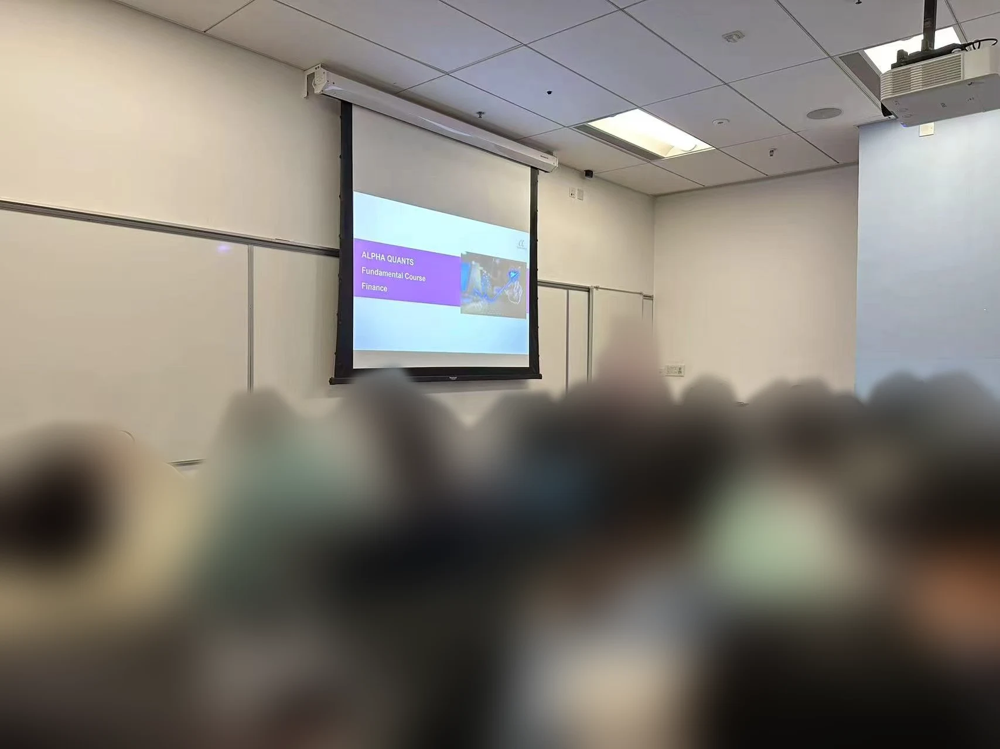
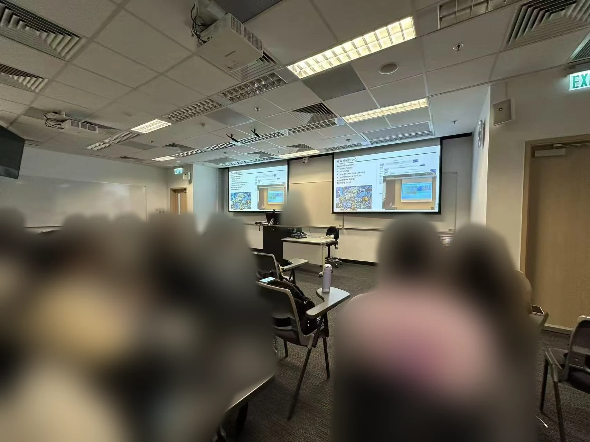

DSE 與大學課程輔導
中學生需要鞏固學科基礎、適應 DSE 的課程要求。大學生則可能在個別科目或專業概念上遇到困難。我們配合學生的課程進度安排輔導，從未掌握的內容入手，協助改善學習方法及提升成績。
 HONG KONG · VICTORIA HARBOUR
HONG KONG · VICTORIA HARBOUR
我們教過不同學制與教育背景的學生。
先了解學生正在學甚麼、哪些內容未掌握，
再按課程需要配對老師。
自 2022 年起，我們持續為北京中加學校學生提供各科遙距輔導，配合課程進度和學生的學習需要，協助學生理解學科內容。

背景提升從學生想進一步了解的學科出發。我們結合高校課堂與實作，安排企業及機構參訪，讓學生接觸學科研究和產業應用，思考自己的興趣與升學方向。
寒暑假走進高校課堂，圍繞感興趣的學科參與短期學習。我們按學生的年級與學科基礎安排項目，結合專題講授、工作坊及實作，讓學生了解大學怎樣學習一門專業。
以初高中學生為主，希望探索學科興趣、提前接觸大學課程的學生。
按年級、學習基礎與授課語言選擇項目，設中文或英文授課選項。
從人工智能與數據分析入門，延伸至物聯網、虛擬實境及遊戲設計。了解生成式人工智能如何用於創作，並在課題中嘗試應用。
人工智能應用 · 數據分析 · AI 遊戲設計透過機械人或智能小車工作坊，認識傳感器與編程控制。學生分組完成組裝、測試及任務挑戰，在操作中理解工程概念。
機械人編程 · 智能小車 · 物理與工程學習金融與經濟的基礎概念，探討數據及人工智能在商業中的運用。結合案例與小組討論，練習分析問題、協作及表達判斷。
金融經濟 · 商業管理 · 數據與決策接觸生物學與化學的專題內容，了解生命科學研究會提出哪些問題。適合對相關專業有興趣、希望進一步認識學科內容的學生。
生物學 · 化學 · 學科探索從教育與心理相關課題入手，接觸大學的專題講授與討論方式。了解這些專業學甚麼，為之後選科提供具體參考。
教育學 · 心理學 · 專題討論認識傳媒營銷與視覺設計的課程方向，接觸創意表達與傳播相關課題。讓對傳媒及設計有興趣的學生，進一步了解專業學習內容。
傳媒營銷 · 視覺設計 · 創意表達不同項目有不同的學習安排。我們按主題選配課堂及實作，讓學生有機會提問、動手嘗試，並與同學合作完成課題。
可選方向包括香港大學的科技、商業及人文學術課程，以及香港中文大學的金融與人工智能等專題學習。
例如香港中文大學的機械人學習項目，結合編程、組裝及小組任務，讓學生實際測試自己的設計。
例如香港理工大學的人工智能實驗室參觀，配合設備講解，接觸多模態模型、計算機視覺等研究與應用方向。
按課程安排參與小組實作或課題匯報，練習分工協作與表達，把完成的作品和學習內容整理成記錄。


我們提供科技大廠、科研院所及政府與公共機構的交流學習機會，讓學生了解課堂以外的研究工作、技術應用與公共服務。
按學生興趣及機構接待安排，選擇參訪項目，配合現場講解與交流提問。學生可以了解一項技術如何運用，也能認識相關專業的學習與工作方向。
參訪項目選擇
從自動駕駛到晶片、機械人與 3D 打印，了解科技研發和產品應用。
接觸細胞、基因及腦科學研究，認識生命科學的研究方向與應用。
走進無人機企業與通航基地，了解飛行技術及相關產業。
結合太空科技、科研設施與環保能源主題，認識不同領域的研究和實踐。
以香港高校參訪為主，配合學長姐的經驗分享。
學生可以帶着自己的選科和升學問題，
了解不同院校的學習環境與課程特色。
可安排香港八校遊覽，亦可按興趣選擇重點院校。參訪著重認識教學環境與學科特色，讓學生比較不同院校，思考適合自己的學習方向。
由學長姐分享選科與升學經驗，介紹所修課程的要求和學習方法。學生可直接提問，了解在大學學習時會遇到甚麼問題。
校園參訪可結合企業與機構交流，讓學生對照大學所學與實際工作，進一步了解感興趣的專業。
查看企業與機構參訪以多對一方式，按學生的學科興趣及升學方向選擇高校、企業或機構參訪，預留交流時間，集中討論個人關心的問題。
為學校及學生團體設計共同的研學主題，結合校園導覽、企業與機構參訪及專題學習，配合學生年級與團體需要安排。


從中學升大學、副學士升學，到學士升碩士，
我們按學生目前的學歷與成績，
協助選擇申請方向並準備所需資料。
先了解學生目前的學習背景與升學目標，再比較課程內容及入學要求，梳理適合申請的方向。
把修讀課程與研學項目中學過的內容整理清楚，說明自己的學科興趣及實際參與，作為準備申請材料的基礎。
按目標課程梳理所需資料與申請次序。需要改善學業表現的學生，可同時配合學科輔導，準備下一階段的升學。
香港科學教育協會
協會立足香港，服務不同學習階段與教育背景的學生。我們的團隊經驗涵蓋學科教學、跨學科課程設計及研學組織，熟悉學生在轉換學制與升學時面對的學習需要。
業務覆蓋中國大陸、中國港澳、加拿大
我們重視學生能否理解所學、提出問題，並逐步形成自己的判斷。課堂輔導與實地學習，都應讓學生更清楚自己的興趣與下一步方向。